Production demos exercising canvas.getContext('webgl2') + GLSL ES 3.00 shaders + WebGL 2-specific surface (MRT, UBOs, etc.). Each entry exercises a different part of the GL render path. Pick one to launch it.
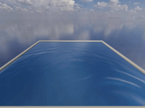
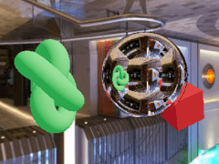
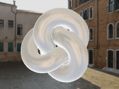
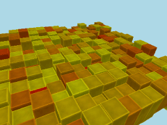
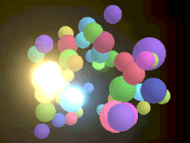
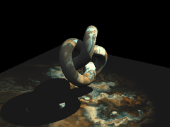
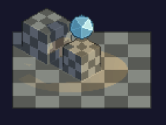
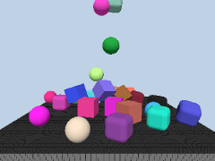
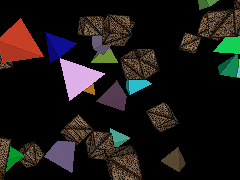
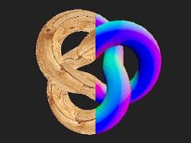
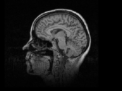
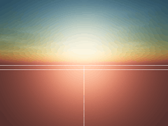
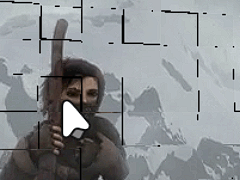
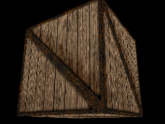